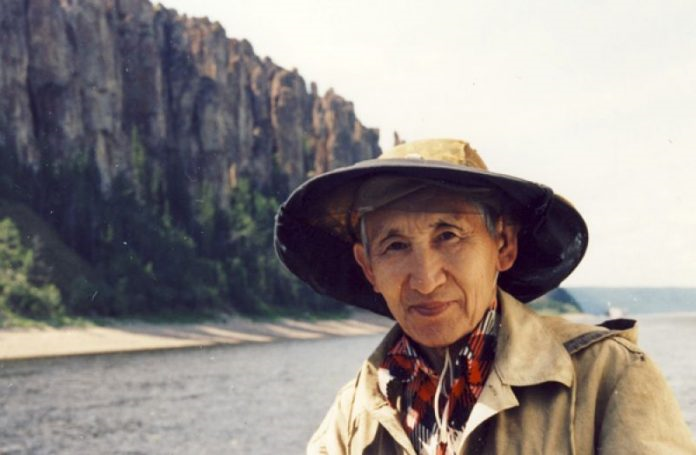
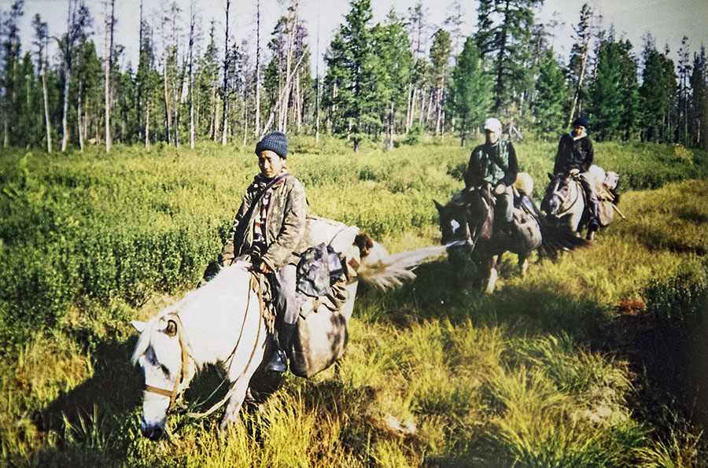

Изучение динозавров в Якутии
...

Экспедиции со школьниками Хоринского наслега
...
В информационном портале "Dinosaurs of Yakutia" вы можете узнать о древней фауне Якутии. Не смотря на то, что наша республика зарекомендовала себя основным регионом нахождения окаменелостей мамонтов, на якутской земле в Мезозойскую эру обитали динозавры и соседствовавшие с ними организмы.На этом сайте вы можете узнать историю изучения доисторической фауны Якутии и посмотреть фотографии найденных окаменелостей. На данный момент сайт находится в дальнейшей разработке. В дальнейшем планируется расширить контент сайта: разработать мини викторины и игровое ознакомление с наукой для привлечения младшего поколения, для подростков и взрослых расширить разнообразие статей и их содержание.